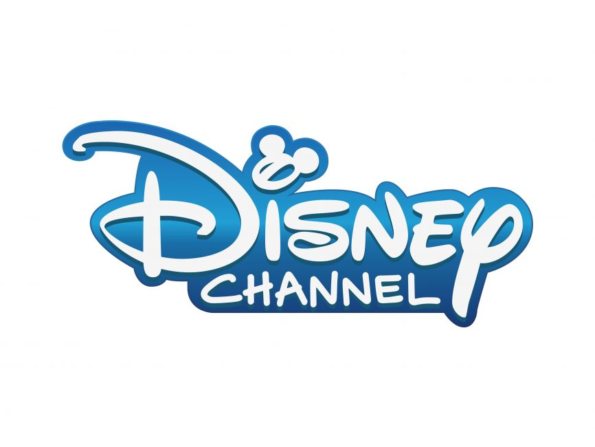

A dynamic, versatile, detail-orientated media technology and content professional with extensive experience in Broadcasting and Channel Management, Media Marketing, Branding and Content Development, who is wholeheartedly committed to the pursuit of excellence in all endeavours.
Works collaboratively and effectively with internal departments to achieve goals and successfully manages projects, adeptly oversees operational functions, content and quality. A flexible, innovative problem-solver with exceptional technical proficiency who thrives under pressure, enjoys a challenge and adapts quickly to new tasks; is self-motivated, diligent and resourceful whether working independently or as part of a team.
A dedicated hands-on leader possessing outstanding interpersonal expertise and the ability to communicate confidently and articulately at all levels, with a consistent focus on inspiring, coaching and motivating others to achieve their full potential, while still valuing self development, growth and good heath practices as a part of successful lifestyle.
WORK EXPERIENCE
FOUNDER & MANAGING DIRECTOR
The Jerk Company
2015 - Present
Johnnesburg
Overall responsibility for the operational strategy of The Jerk Company across all aspects of the business, including branding, marketing, management and training, logistics and operations.
Develop marketing strategy for use on social platforms (Instagram, Facebook, Tik Tok) and OOH ads.
Create and edit digital content, manage customer retention, social posts and ad spend.
Manage website SEO, Google and Facebook Ads with particular attention to analytics and statistics to understand consumer behavior and content resonance.
Optimize operational budget by managing supply chain, stock levels, stock costs and logistics.
Identify new business opportunities and influencer partnerships, growing the business in line with the overall business strategy.
Monitor provincial legislation and environmental health code to ensure compliance and good working practices.
Manage weekly market and festival operations including production, compliance, implementation and logistics.
Develop relationships with event/festival organizers and corporate partners to extend brand reach, awareness and engagement.
PROGRAMMING & CONTENT PLANNING MANAGER
Viacom International Media Networks
2006 – 2015
London/Johannesburg
Contribute significantly to the successful achievement of organisational objectives, through development of all channel strategies for content and planning (macro), scheduling (micro) and on air promotion for MTV Base South Africa, MTV Base Rest of Africa (ROA) and MTV South Africa.
Deliver annual content strategy, media planning strategy and monthly programming stunts, grids and highlights.
Manage a team of 3 planners, a channel operations coordinator and 3 schedulers including recruitment, training and development.
Maximize channel awareness by working closely with the Digital and Marketing departments to coordinate programming stunt promotion with off-air events and activations and online engagement.
Leverage market research, online engagement reports, ratings data analysis from DStvi/TAMS, and internal strategy to develop competitive monthly channel content plans for MTV, MTV Base and Sub Saharan terrestrial blocks.
Develop strategies to optimize commercial opportunities with new programming, on air stunts, high-priority premieres and themed music blocks, working closely with Commercial and Sponsorship departments, using market research and TAMS ratings to guide decision making.
Identify content for acquisition from international distributors, content from MTV International inventory and submitted content from independent producers, to support channel brand and strategy
Conceptualize and develop fresh long and short form content in line with content strategy, working with Production, On Air, Digital and Sponsorship teams to bring to fruition.
Conduct research focus groups to determine public opinion around key content to support programming decisions.
Manage 4 terrestrial block partnerships across Sub Saharan Africa by maintaining two-way feedback with partners to assess needs and monitor content delivery and output.
Be point of contact for all internal and external content stakeholders, incl. sponsorship clients, viewers, record labels, etc.
Manage all media planning of On Air sponsorship campaigns incl. strategy, implementation and reporting.
Provide direction to the Scheduling (micro) and On Air GFX teams on methodology including media planning, TX log timing, sponsorship objectives and reporting, commercial break structure and integration.
Manage online content to ensure alignment on all platforms with editorial strategy.
Engage with sponsorship clients to negotiate deals for show and competition prizes.
Serve as final point-of-contact for the delivery of international/network material, including reformatting onscreen GFX and re-editing and/or re-versioning material for channel compliance.
PROGRAMMING MANAGER Italy/Emea
Discovery Networks Africa
2004-2006
London
Manage and monitor all programming (macro) schedules, reporting and stunts for Discovery Channel and digital network channels Discovery Science, Travel and Living and Discovery Civilization
Train newly-hired local Programming Manager on all aspects of schedule delivery and completion.
Manage all content planning for Discovery Channel (Africa) and digital network channels Discovery Science (Middle East) and Discovery Civilization (Middle East).
Use ratings, internal strategy and market knowledge to develop competitive monthly (macro) schedules.
Worked closely with On Air team to announce channel highlights and develop on-air campaigns.
Monitor and manage cultural sensitivity aspects of programming for Arabic region channels.
PRESENTATION SCHEDULER - Disney Channel
The Walt Disney Company
2003-2004
London

Create daily TX log for Disney Channel and Toon Disney using weekly programme planning schedule.
View and monitor Disney content using in house caching program to confirm content availability and quality.
PROGRAMMING PLANNER - MTV France
MTV Networks Europe
2002-2003
London
Prepare and manage monthly (macro) schedule, including developing weekend programming stunts and other special programming; manage London based team and report to the Paris office.
Management and organization of MTV and International content re-versioning (localizing) into French language working effectively within tight timeframes and resolving delivery challenges.
Follow and adhere to UK OfCom regulatory guidelines for international channels.
PRESENTATION SCHEDULER - MTV France
MTV Networks Europe
2000-2002
London
PRESENTATION ASSISTANT - MTV North
MTV Networks Europe
1999-2000
London
VIDEO LIBRARIAN - MTV France
MTV Networks Europe
1996-1999
London
MOTOR MECHANIC APPRENTICE
Volvo Cars
1987-1990
London
EDUCATION
FULL STACK WEB DEVELOPER - Udemy
2024
Online
CONTENT STRATEGY: ENGAGING AUDIENCES, NorthWestern University
2021
Online
• Including: Creating Personas; Marketing or Branding Your Content; Understanding your audience; Why do experiences matter?; Using a story arc with content.
CONTENT MANAGEMENT, Hubspot Academy
2020
Online
• Including: The Power Of Story Telling; Content Creation Frameworks; Long Term Content Strategy; Generating Content Ideas; Creating Quality Blog Content; Using Blogging To Rank #1 On Google; Repurposing Content; Creating Topic Cluster And Pillar Pages; Successful Video Marketing Strategies; Guest Blogging Strategy Powered By SEO; Effectively Promoting Content; Measuring And Analyzing Your Content.
B.ENG MECHANICAL ENGINEERING, Middlesex University
1996
London
Including: Information Technology and Computer Programming; Engineering Project Development and management, Product Development and Research; Thermodynamics and Fluid Mechanics; Understanding Materials; Advanced Mathematics; Vehicle Crash Testing
BTEC MOTOR VEHICLE ENGINEERING, Waltham Forest College
1992
London
PROFESSIONAL DEVELOPMENT AND TRAINING
What's On Broadcast Planning/Scheduling System, Viacom IMN (2011)
What's On Broadcast Planning/Scheduling System, Viacom IMN (2011)
Boss Planning/Scheduling System, Discovery Networks (2004)
IBMS Broadcast Planning/Scheduling System, The Walt Disney Company (2003)
French Language for Beginners, Linguarama (2003)
The Principles of Management, Wray Associates (2003)
RCS Music Planning/Scheduling System, MTV Networks (1999)
Promoting and staging a live music event, including arranging talent, booking venue, deploying promotion techniques and compiling event rundown, City University, London (1999)
SKILLS
Extensive knowledge of broadcast planning and content management.
Intermediate marketing & product development
Intermediate social media management
Advanced computer literacy
Intermediate content management
Dynamic problem solver
Highly detail oriented
Budgeting and costing
Manage consecutive projects concurrently
Self-Starter
Team Player
Digital Media Management
ACHIEVEMENTS AND AWARDS
Promax Awards 2010 - 2015
Best 2D Animation Design - The Silent Chart 2010
Best Sponsors Spot - MTV Airwaves Kick Up A Gear 2010
Best Promo Only Using Promo Footage - Touching Base 2011
Best Music/Arts Promo - MVP 2011
Best Reality Promo - MTV Base VJ Search 2012
Best Music Arts Promo/Something For Nothing - Housewarming 2012
Best Sponsor Integration spot - MTV Fish Eagle Air Durban July Teaser 2013
Best on Air Programme Campaign/The Mama Africa Award/Best Sponsor Integration Spot- MTV Guinness Made Of Black 2014
Best On Air Branding - MTV Africa Music Awards 2014
Best Sponsor Integration - Nike 2015
Best Sound Design - Housewarming 2015
Sunday Time Generation Next
Coolest Music Channel - MTV (Gold) MTV Base (Silver)